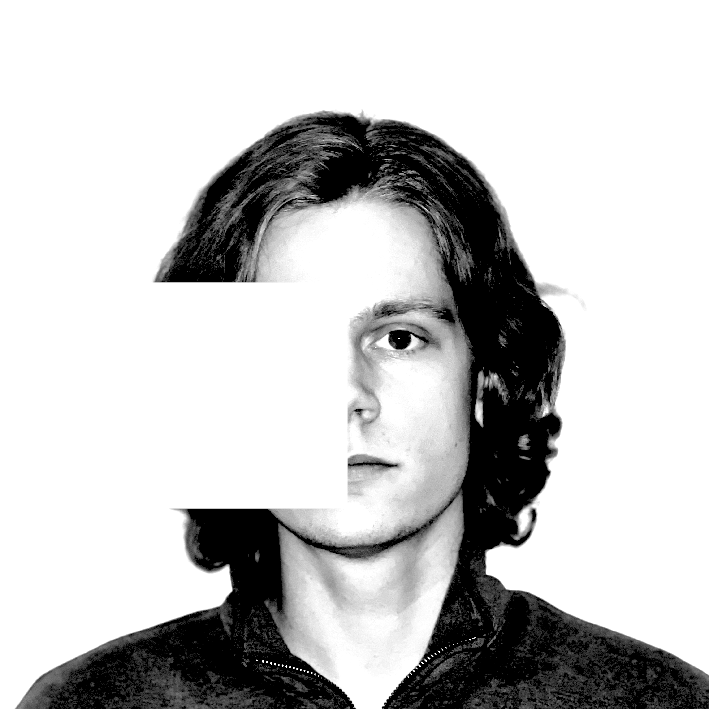

About
My name is Caleb Holcomb. I grew up in a remote Alaskan village populated by a few hundred people. Insomnia runs in the men in my family.
I have been a commercial fisherman, a cashier, a student, a pizza chef, a blinds installer, a delivery driver, a substitute teacher, a construction worker, and an oneironaut.
I am the eldest of 7 biological siblings and 8 stepsiblings. Rachel Dolezal is my aunt and I was born at her house on January 25, 2004 at 4:32 AM.
I almost lost the use my left hand at 17 due to severe burns. I have never seen the moon. One of these is a lie.
My debut album, Lullabies & Other Lies, is available everywhere.